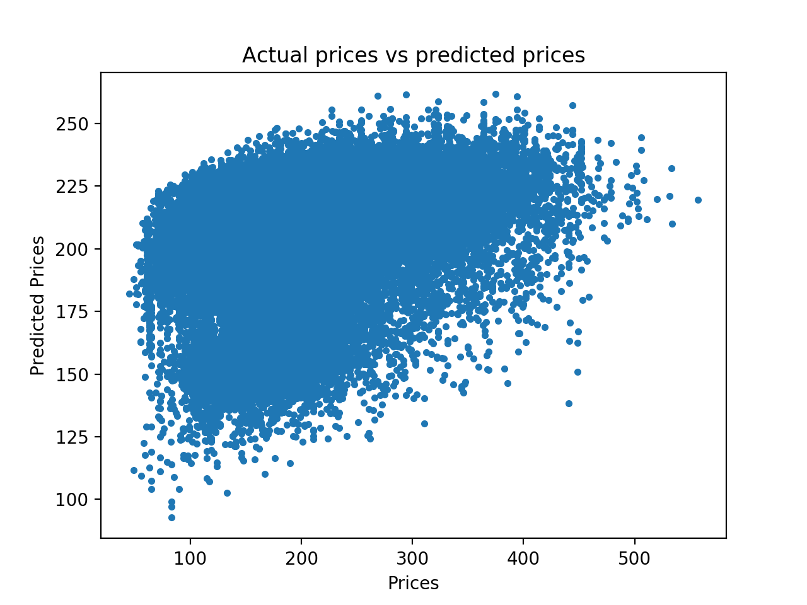

Our task was to build a machine learning model that predicts the prices of Southwest Airlines flights from 100 domestic (and several out-of-country) airports. This is an interesting and important objective because millions of Americans spend countless hours every year stressing about flight costs and trying to find affordable vacation destinations; by using our model, we could make accurate predictions for one of America’s largest airlines in order to make trip planning easier. We gathered data on roughly 47,000 flights scheduled for the beginning of July as this would simulate buying a plane ticket 6 weeks beforehand, a common metric used by frequent flyers and often one of the most cost-efficient times to make air travel reservations. In addition to the cost of each ticket and whether that flight was sold out, we included other attributes related to the sizes and capacities of all airports, the populations of each city, and the departure and arrival times. Running our data through Weka, we tested a variety of learners, including linear regression, additive regression, nearest neighbor, and locally weighted learning.
Key Results
We tested each of the aforementioned learners multiple times with different settings: cross validation with different numbers of folds, models without cross validation (instead using 66% of the dataset as training data and the rest as test data), and various combinations of attributes. We found that the linear regression model (specifically using 8-fold cross validation) performed the best, with a correlation coefficient of 0.7577. The models that used all attributes were the most effective, and the most important attributes were the airport codes, the flight times, and whether or not the flight sold out.
Linear Regression
These are the results of the linear regression model with 8-fold cross validation. This was our most successful model.
ZeroR
The ZeroR learner's results served as our baseline. ZeroR works by simply using the most common attribute, which makes it suitable for a reference model.
K-Nearest Neighbor
These results come from our best non-regression model, K-Nearest Neighbor with 100-fold cross validation and automatic clustering.
Report
A PDF copy of our report can be downloaded here, and our comprehensive results, with relevant CSV files and score information, can be downloaded here.
Our Project
Air travel is the quickest and most efficient way to travel long distances and millions of people a year buy plane tickets to travel for leisure, work, or emergencies. As avid travellers ourselves, we often experience a feeling of uncertainty buying tickets, not knowing if that purchase was a good deal or not. Our model is an attempt to resolve this issue. By using past ticket prices and information, we can predict the price of a ticket, and compare that to the actual price offered to determine if a ticket is a good deal.
Data Collection
In order to create our dataset, we wrote Python scripts to crawl the Southwest Airlines site and to find the prices of flights between our 100 airports on July 1st, 2018. The script used various default settings: it searched for flights that would arrive and depart at any time during the day, finding prices for a single adult passenger with no senior discount and no extra baggage. The script returned data in JSON format for each flight: the cost, the arrival and departure times, the number of RapidRewards points accrued, whether the flight was sold out, and the three-letter codes of the arrival and departure airports. However, we quickly realized that the number of accrual points was related directly to the cost of the ticket, so we removed this attribute. We then parsed this JSON data and stored it in a Mongo database, which we finally exported as a CSV file. These scripts took several hours to run, but returned to us information about roughly 47,000 flights. We combined the flight data with several manually-collected attributes: the populations of each relevant city, the sizes of each airport (in acres), the average number of yearly passengers per airport, and the average number of yearly sunny days in each relevant city. This gave us a dataset with 14 attributes and roughly 47,000 instances, which we would later feed through Weka.
Feature Selection
Our dataset consisted of about 47,000 different flights scheduled for the start of July. We included 13 attributes (excluding ticket cost) to predict the cost of a ticket:
Whether or not the flight was sold out
The departure and arrival times of the flight
The average number of yearly passengers through both departure and arrival cities
The size of both departure and arrival cities
Airport codes of the both departure and arrival cities
Airport populations of both departure and arrival cities
Average numbers of yearly sunny days of both the departure and arrival cities
We originally started with two additional attributes, but we decided to remove them. These included the number of Southwest RapidRewards points accrued for purchasing the ticket, and the path of travel, a string containing the codes of all airports that the plane would land at (e.g. "BWI-AUS" would indicate that the plane traveled from Baltimore to Austin, whereas "BWI-MDW-AUS" would indicate the same flight but with a layover in Chicago). We decided to exclude these attributes because the path was too difficult to encode in a way where it would be useful, and the number of RapidRewards points accrued was directly related to the cost of the ticket (so our model would not have been doing any actual predicting if it used this information).
Models Tested
Given that we wanted our model to predict the cost of flight tickets (a numerical value), we decided to start by testing linear regression models. We achieved our highest correlation score of 0.7577 through this model, but we decided to test other methods as well (best model for each learner type shown in the table below), although none of the other models were as effective as our linear regression model.
Model Tested
Correlation Score
Additive Regression (10-fold)
0.3440
Locally Weighted Learning (66% split)
0.3008
Linear Regression (8-fold)
0.7577
Nearest Neighbor (100-fold)
0.6824
ZeroR
0.0
Our best results from our linear regression model gave us a mean absolute error of 35.15, meaning that on average, our prediction was $35 above or below the actual price. Because prices generally fell between the $150-$350 price range, with an average cost of $206.76, we think that in the scope of this project our model achieved the desired results even with a 17% average error. Our goal was to find if a ticket price was fair or not, and a difference of $35 is small enough for our model to be useful in the real world.
We initially expected (and our experimentation confirmed) that linear regression would be the best learner for this dataset. This is because regression is generally suited to numerical predictions, and since it assigns weights to each attribute, it was able to focus more on the most important attributes while assigning less significant weights to the less relevant attributes. Even though our dataset had categorical variables like the departure and arrival airports, Weka automatically converts these to continuous values by weighting the combinations of the presence or absence of these values.
Niave Linear Regression Implementation

The results of our naive linear regression model
After our initial theory that linear regression would be the best model for this type of data, we decided to attempt to implement our own linear regression model (although with very minimal success). Our biggest problem was figuring out how to represent our categorical variables (destination and departure airports). One method that we stumbled upon was defining each categorical variable as the parts that comprise it. We defined each categorical variable as the sum of the normalized attributes that it correlates to (city population, airport size, annual passengers, and sunny days). We then ran this data through a Python script to generate a linear regression model. The results are shown in the figure to the left. As can be seen from the image, this model is extremely inaccurate. After running the model on separate training and test data, we achieved a mean squared error of 4380. We believe that this high error is due to our attempts to represent our categorical features as arbitrary combinations of the features they correspond to.
Conclusions and Future Work
In future iterations of this project, we would work to more closely determine which sets of attributes were most effective. We tried several different combinations of attributes during our testing, but none granted better results than simply using all 14. We believe that with more experimentation we could find a more effective grouping of features and thus would be able to create a more efficient and accurate model. However, within the scope of this project, we believe that we achieved positive and useful results.
Contributions
Mike was responsible for the web crawler implementation/data collection and the website, while Ethan worked on testing various models and combinations of attributes in addition to implementing his own machine learning model. Both members contributed to the final report.
All Correlation Scores
Below can be found our complete list of results from Weka for various models. Each of these was tested on the dataset with all 14 attributes, as eliminating attributes always resulted in lower scores for our models. To download images of comprehensive score reports (including outputs like absolute mean error, mean squared error, etc.) and all CSV files including each model's predicted values and their comparisons to the actual prices, click here.